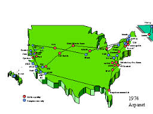

1969,progettazione della rete militare statunitense Arpanet
La nascita di internet risale al 1969,quando il governo degli Stati Uniti fece progettare una rete militare finalizzata allo scambio di informazioni veloce e sicuro, che fosse in grado di connettere sistemi diversi e distanti fra loro e che fosse capace di funzionare anche con piu nodi guasti o distrutti. Questa rete, sviluppata da un'agenzia del Dipartimento della dfesa denominata ARPA (Advanced Research project Agency) fu chiamata ARPANET. Essa era
in grado di funzionare anche dopo un disastro nucleare,
essendo costituita da moduli che mettevano un computer in
grado di comunicare con un altro seguendo stade diverse:
quando una strada risulta ostacolata i messaggi seguono strade alternative (instradamento delle
informazioni, routing). L’aspetto più importante era il modo con il quale un computer comunicava
con un altro. Di questo si occupa il protocollo IP (Internet Protocol), un protocollo che garantisce la
comunicazione anche tra computer diversi e con sistemi operativi diversi. Questa rimane una delle
caratteristiche fondamentali di INTERNET.
